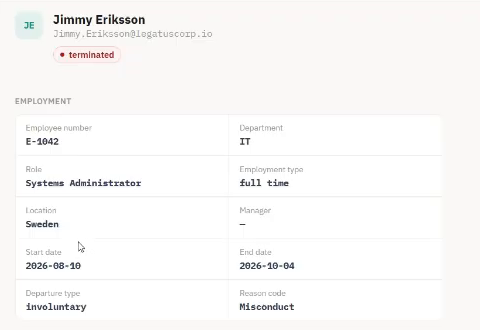
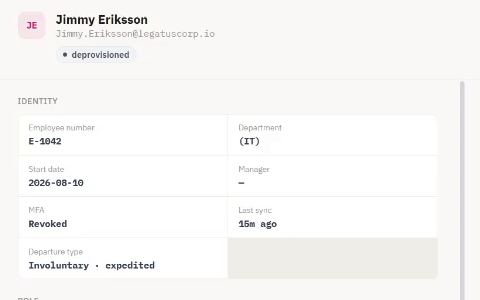
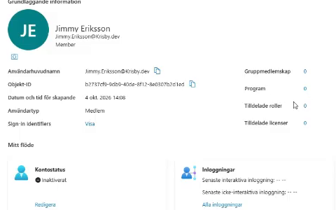

IAM work sample · Andreas Krisby
From an HR departure
to a disabled Entra account.
Elytra owns employment facts. Ascendra owns access decisions. This lab connects them to a real Microsoft Entra tenant—and tests whether synchronization preserves a decision to revoke access.
Demonstration
Follow the same person across three systems.
The final Identity Ops troubleshooting segment is a separate simulated scenario. It illustrates log investigation, not additional tenant verification for this lab. Open the recording on YouTube ↗
Recorded result · Jimmy Eriksson
Employment ends. Identity deprovisions. Account disables.



Cropped frames from the 1080p recording show the same fictional employee in each system and the disabled Entra account at 04:26. Open an image or timestamp to inspect the evidence.
Verification status · 14 October 2026
| Status | Evidence and scope |
|---|---|
| Verified in tenant | The recording shows Jimmy Eriksson's disabled Entra account at 04:26. Original account provisioning and mapped group grant / revoke are documented in the original hardening work. |
| Tested locally | 13 October regression fix: 45 tests and the Ascendra build passed, including failed disable / session-revocation operations preserving deprovisioning intent. |
| Simulated | Identity Ops segment, interactive machine flow, and seeded Auth0 / generic SCIM screens. |
| Remaining | Deploy the later regression fix and capture a new dated disable check, session-revocation response and mapped membership removal for that version. Test plan and recording script are prepared; no new tenant test has been run. |
My contribution
I drove the system boundary and tested it.
I wanted HR and IGA to be separate so employment facts could not silently override an access decision. I wanted to test what happened when HR still said “employed” after IGA had deliberately revoked access—and whether a new HR event or Resync would bring it back.
I configured the Entra app registration, permissions and integration credentials, ran the systems, tested synchronization and investigated the unexpected reactivation. I requested an architecture review, evaluated the findings and checked the original hardening work against the live lab.
Read the HR / IGA boundary decision ↗Main investigation · Original defect
Resync overrode a decision to revoke access.
1 · What I tested
An identity deliberately deprovisioned in IGA, followed by a resync or another HR update. The person could still be employed in HR.
2 · What went wrong
The Entra account could become enabled again. A successful Graph request concealed the wrong access state.
3 · Why it happened
Provisioning and drift checks used HR employment status alone. Resync could also overwrite Ascendra’s deprovisioning decision.
4 · How I checked the fix
The shared desired-state rule considers both HR facts and the IGA decision. I checked the original hardening in the live lab; the expected outcome is a disabled target account after resync.
Architecture
Two owners. Two databases. One event boundary.
Elytra commits the HR change and retained outbox event together. Ascendra pulls that feed into its own Convex database, then provisions through Graph. Separate reconciliation checks detect HR divergence and Entra account drift.

Explore the interactive system simulation
Employee active · HR database
Employee active · IGA database
Account enabled
1 / 6 · HR records the departure.
Illustrative flow · No tenant connection · Timing is condensed. The outbox retains its event.
Explore database tables and failure scenarios
Follow the event cursor, quarantine and Graph failure recovery in the full demonstration.
Open the detailed system anatomy ↗Non-human identities: an employee’s automation can remain active after departure. Ascendra links NHIs to owners and flags that risk; the seeded Finance Reconciliation Job demonstrates terminated_owner. Read the NHI scope and limits ↓
For a closer look
Choose the technical detail.
Operations: Graph permissions, credentials, alerts and retry
App-only Graph access: the lab provisions users through User.ReadWrite.All and reads verified domains through Organization.Read.All. Session revocation requires User.RevokeSessions.All; ordinary mapped group membership changes require GroupMember.ReadWrite.All. Optional NHI discovery reads application and owner metadata with Application.Read.All / Directory.Read.All. These are documented operation requirements, not a claim that every permission is currently granted in the tenant.
Microsoft documents User.EnableDisableAccount.All plus User.Read.All as the least-privileged combination for accountEnabled. Target account roles can impose additional requirements. The lab's broader user provisioning permission should not be presented as a least-privilege design. User updates · Session revocation · Membership removal
Credentials: the backend reads the Entra client secret and integration Bearer secret from Convex environment variables. The browser receives neither secret. Access tokens are requested server-side. The implementation does not provide automatic secret rotation; NHI expiry findings are a review signal, not a rotation service.
Alerts: failed Graph operations appear in sync/audit events and failed lifecycle steps. HR poll health and dead-letter events provide visible integration signals. There is no configured email or paging service. Retry: an operator retries the failed lifecycle step or uses Resync; there is no general automatic Graph retry/backoff loop. Account reconciliation runs every 15 minutes; HR snapshot reconciliation every six hours.
Architecture: outbox, separate databases and reconciliation
Elytra and Ascendra have independent React/Vite frontends, operator authentication and Convex deployments. They communicate through a shared-secret-authenticated HTTP API, with no shared database or cross-deployment Convex calls. Ascendra never writes into HR.
Elytra changes the employee, adds lifecycle history and appends an outbox event inside one atomic mutation. A sequence counter orders events. Each event includes an employee snapshot and the original occurrence time; reading the feed does not delete it.
Every minute, Ascendra reads its own saved cursor and requests GET /api/events?since=…. Ingest accepts additive fields, quarantines malformed events and records critical audit evidence. Valid identity changes, cursor progress and scheduled work commit in Ascendra's own database.
Graph calls run separately, after that commit. An advanced ingest cursor proves local handling, not a successful account write. Every six hours, Ascendra reads HR employee and department snapshots to detect divergence and deduplicate findings; this check is detection-only. Every 15 minutes, account reconciliation checks Entra, disables accounts that should be disabled and flags unexpectedly disabled accounts for review.
Lifecycle: Joiner, Mover, Leaver and sessions
A Joiner becomes an employee record in Elytra and an identity in Ascendra before provisioning reaches Entra. Future-dated starts and departures are processed by Elytra's daily transition job at 02:00 UTC.
A Mover changes employment context such as department or job title. Those facts are synchronized, but that does not mean every old entitlement is automatically reviewed or replaced. The lab separates employment updates from access decisions.
A Leaver is deprovisioned locally, then a scheduled action disables the Entra account and calls revokeSignInSessions. The “Access revoked” lifecycle step completes only after both succeed. Existing access tokens may remain valid; this is not an instant logout guarantee for every application.
FinanceApp SCIM synchronization and evaluation of non-human identities owned by the departing employee are separate downstream effects. Microsoft Graph provisions Entra; SCIM is used for the downstream application.
Governance: operator roles, maker/checker and recertification
SecurityAdmin, AccessAdmin, Auditor and HelpDesk have distinct capabilities. These operator permissions are separate from the roles assigned to managed employees.
A privileged role grant or deprovisioning of a still-employed worker becomes a pending request. A different operator must approve it; the requester cannot approve their own request.
Recertification campaigns snapshot role holders for Keep or Revoke decisions. Unresolved items are revoked when the campaign closes. If the original grantor is recorded, that operator cannot affirm their own grant. Older grants without grantor history cannot enforce that check.
For a role mapped to an Entra group, revocation schedules membership removal and logs the result separately. A local role change does not guarantee a successful target removal. An unmapped role produces an explicit unenforced-revocation audit event.
NHI: ownership, credential risk and Entra discovery
The NHI register models service principals, app registrations, automation accounts, API keys and service accounts. Each record can link to a managed employee identity and carry business criticality, permission metadata, credential expiry and a last-use timestamp.
Offboarding and deliberate deprovisioning schedule risk evaluation for the owner's NHIs. Active records are checked for absent or departed owners, use after termination when timestamps are available, expired or soon-expiring credentials, more than one year of remaining credential validity, broad permission labels and stale low-criticality use. Findings can be reviewed, with audited local ownership transfers and risk acceptance.
Optional read-only Microsoft Graph discovery imports a bounded page of Entra app registrations, owner information, credential expiry metadata and declared resource-permission IDs. Owner email is matched to an Ascendra identity. This is not a complete service-principal inventory or an effective-permissions audit. Imported permission IDs are not resolved to scope names, so the broad-permission heuristic cannot fully assess those imported entries.
Scope: NHI Disable, Rotate secret, Reduce permissions and owner transfer update the lab's records; they do not perform those changes in Entra. Last-use checks use recorded or seeded timestamps, not a live Graph sign-in-log feed. The Finance Reconciliation Job is seeded demo data. NHI behavior is implemented and covered by the risk test suite; this page does not claim a newly verified live NHI remediation.
Explore the source repository ↗Hardening: the defects, regression checks and limits
An architecture review exposed a stalled feed caused by malformed events, lost source timestamps, missing HR reconciliation and a departure during leave of absence that never completed. The original fixes were verified against live deployments. The hardening plan records their scope and deliberately deferred work.
The later regression review found that recording a Graph failure could replace deprovisioned with error. For a still-employed worker, later resync could then interpret the identity as activatable. The local fix preserves revocation intent and records synchronization failure separately in sync/audit events and lifecycle steps.
Regression evidence, 13 October 2026: start with an active employee deliberately deprovisioned in IGA, record a failed disable or session-revocation operation, and resolve desired state again. Expected and actual: the decision remains deprovisioned and account activation stays false. All 45 tests and the Ascendra production build passed. See the verification status for deployment and tenant evidence.
There is no general automatic Graph retry/backoff loop. An operator retries a failed lifecycle step or uses Resync. HR reconciliation is detection-only; Entra account drift checks do not implement group drift repair. Multi-role identities and a complete role-to-group provisioning subsystem remain outside the lab's scope.
Auth0 and generic SCIM screens contain simulated or seeded state. The screenshots are historical captures. Account and membership state alone do not prove successful application sign-in.
Read the original hardening plan ↗Screenshots and earlier project writeups


The Swedish writeups describe earlier project stages and carry version notes. They are useful history; the current portfolio distinguishes historical live verification from the later local regression fix.
Andreas Krisby
Learning IAM by checking what actually happens.
I'm working toward my first IAM role. This work sample shows how I connect business context to access, investigate an integration and distinguish a local decision from a verified target-system change.